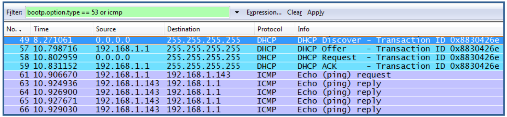

Réseaux · Corrigé · TD 4
Corrigé rédigé à partir des cours 2 à 5.
Les conversions hexadécimales ont été vérifiées.

On étudie la trame n° 49, le DHCP Discover : le PC n'a pas encore d'adresse IP (source 0.0.0.0) et cherche un serveur DHCP en diffusion (destination 255.255.255.255).
01 48 = 1 × 256 + 4 × 16 + 8 = 328.
| En-tête Ethernet (14 octets) | En-tête UDP (8 octets) | |||||
|---|---|---|---|---|---|---|
| MAC dest | MAC source | Type | Port src | Port dest | Longueur | Checksum |
| ff ff ff ff ff ff | 00 24 e8 ca dd de | 08 00 | 00 44 | 00 43 | 01 34 | 1d d6 |
| En-tête IPv4 (20 octets) | |||||||||
|---|---|---|---|---|---|---|---|---|---|
| Version + IHL | ToS | Longueur | Identif. | Flags + offset | TTL | Protocole | Checksum | IP source | IP destination |
| 45 | 00 | 01 48 | 00 f1 | 00 00 | 80 | 11 | 38 b5 | 00 00 00 00 | ff ff ff ff |
1) Base utilisée
2) Adresses MAC
3) Protocole de couche 3
08 00 → IPv4.4) Octets de l'en-tête Ethernet
ff ff ff ff ff ff 00 24 e8 ca dd de 08 00 (14 octets).5) et 6) Version et longueur de l'en-tête
45 : 1er chiffre 4 = IPv4 ; 2e chiffre IHL = 5 mots de 32 bits = 20 octets (pas d'options).7) Type de service
8) Longueur totale
01 48 = 328 octets (en-tête IP compris).9) Identification
0x00F1 = 15 × 16 + 1 = 241.10) Fragmentation ?
00 00 : flags DF = 0, MF = 0 et offset = 0 → pas de fragmentation (paquet complet, unique).11) Durée de vie
0x80 = 128 sauts maximum.12) Protocole transporté
0x11 = 17 → UDP. Normal : DHCP fonctionne sur UDP.13) Adresses IP
14) Octets de l'en-tête IPv4
45 00 01 48 00 f1 00 00 80 11 38 b5 00 00 00 00 ff ff ff ff (20 octets).15) Ports
00 44 = 68 (bootpc = client) ; destination 00 43 = 67 (bootps = serveur).16) Longueur du PDU de couche 4
01 34 = 308 octets (8 d'en-tête + 300 de données). Vérification : 328 − 20 (en-tête IP) = 308.| Valeur | Nom | Rôle |
|---|---|---|
| 21 600 s = 6 h | Refresh | Intervalle au bout duquel le serveur secondaire vérifie (via le numéro de série) si la zone du primaire a changé |
| 3 600 s = 1 h | Retry | Si la vérification a échoué (primaire injoignable), délai avant un nouvel essai |
| 604 800 s = 7 jours | Expire | Sans contact avec le primaire pendant cette durée, le secondaire considère ses données comme périmées et cesse de répondre pour la zone |
| 172 800 s = 2 jours | Time to Live | Durée pendant laquelle les autres serveurs peuvent garder les enregistrements en cache |
a) C'est le fichier de zone du domaine my.domain : un enregistrement SOA (autorité, numéro de série et temporisateurs), un NS (le serveur de noms curly), des A (nom → IP des 4 machines), puis la zone de résolution inverse 1.168.192.in-addr.arpa avec des PTR (IP → nom), et la zone inverse de la boucle locale (127.0.0.1 → localhost).
b) Expire = 3 600 000 s = 1000 h ≈ 41,7 jours (41 jours et 16 h).
c) Refresh = 3600 s = 1 heure.
d) Le serveur de noms est curly.my.domain, adresse 192.168.1.1 (lignes NS puis A).
e) L'enregistrement PTR de la zone inverse : 4 IN PTR shemp.my.domain. (c'est-à-dire 4.1.168.192.in-addr.arpa → shemp.my.domain).
f) Ajouter dans la zone, et augmenter le numéro de série (ex. 961231) pour que les secondaires se mettent à jour :
mail.my.domain. IN A 192.168.1.10 my.domain. IN MX 10 mail.my.domain. 10 IN PTR mail.my.domain. ; dans la zone 1.168.192.IN-ADDR.ARPA
g) Un alias se crée avec un CNAME : smtp.my.domain. IN CNAME mail.my.domain.
Les éléments d'une URL, et le rôle de « :// »
protocole://[utilisateur:motdepasse@]hôte[:port][/chemin][/document], par exemple http://www.exemple.fr:80/rep/index.html. Le « : » termine le nom du protocole (schéma) et le « // » annonce que la suite commence par le nom de l'hôte : on sait ainsi où s'arrête le protocole et où commence l'adresse du serveur.| Ligne | Rôle |
|---|---|
GET / http/1.1 | Ligne de requête : méthode GET (lire sans modifier), ressource / (racine du site, la page d'accueil), version HTTP/1.1 |
Host: www.exemple.fr | Nom du serveur demandé (obligatoire en HTTP/1.1 : plusieurs sites peuvent partager une même IP) |
User-Agent: Mozilla/5.0 … Firefox/5.0 | Le client : navigateur Firefox 5 sous Windows 7 (Windows NT 6.1) |
Accept: text/html, … | Types de contenu (MIME) acceptés par le navigateur |
Accept-Language: fr,en | Langues préférées : français, sinon anglais |
Accept-Encoding: gzip, deflate | Compressions acceptées pour la réponse |
Accept-Charset: ISO-8859-1,utf-8 | Jeux de caractères acceptés |
Connection: keep-alive | Garder la connexion TCP ouverte pour les requêtes suivantes (images, CSS…) |
Il n'y a pas de corps : une requête GET n'envoie pas de données. Le message se termine par une ligne vide.